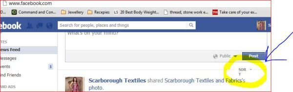
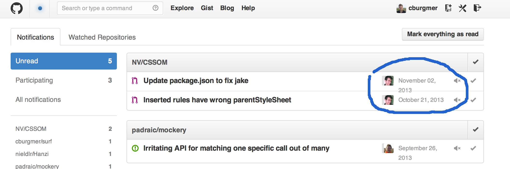
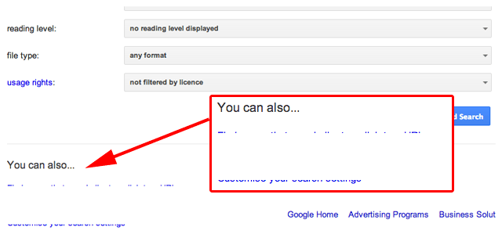
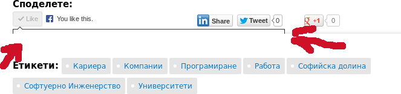
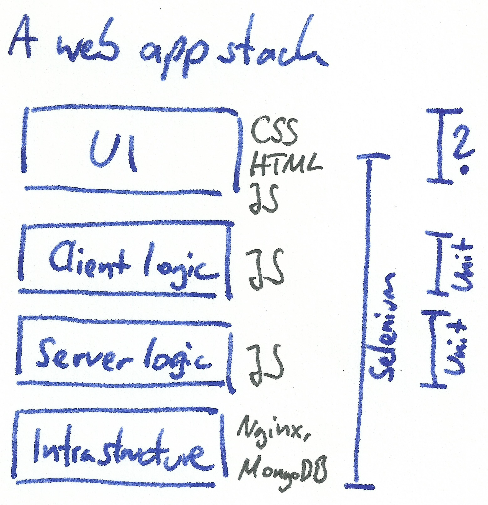
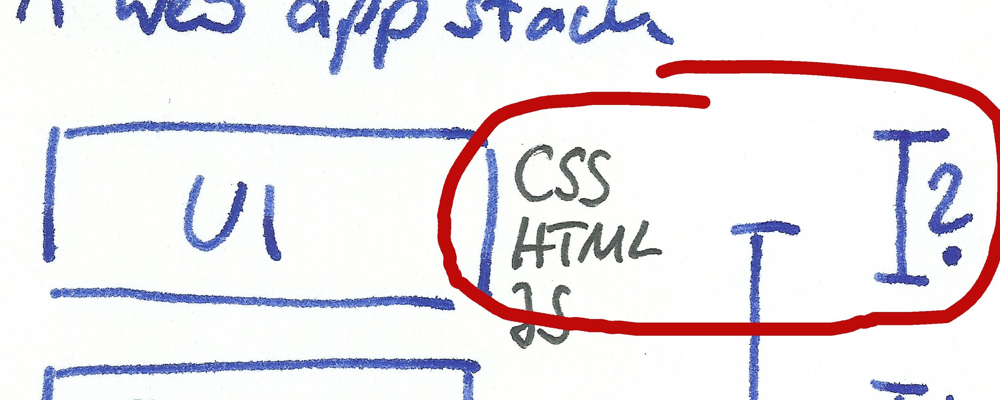

Your browser doesn't support the features required by impress.js, so you are presented with a simplified version of this presentation.
For the best experience please use the latest Chrome, Safari or Firefox browser.
Your CSS
Happy
... or sad?
We users notice

http://kaizentesting.wordpress.com/2012/08/04/different-facets-of-testing-web-applications%C2%AC-and-facebook-bugs/


http://www.seroundtable.com/google-advanced-search-bug-17091.html

http://atodorov.org/blog/2013/06/02/sofiavalley-ui-bug/
Missing! Reward!
Safety net
Source: http://en.wikipedia.org/wiki/File:Wonderland_Walker_2.jpg
We need our safety net to safely develop and refactor with confidence.
Missing since the web exists.
Please call 812-4711-4221.
Professionalism
We want high quality
But
- growing complexity in CSS as a language
- being responsive
- on larger pages
- that are shown on a growing number of devices
- in multiple browsers.
Help!
Testing, testing, testing

Developers are using testing tools since for ever.
assertThat(
returnedStatusCode,
is(200)
);
We have been missing CSS test tooling all along

We can fix this!
Demo time Demo time Demo time Demo time Demo time Demo time Demo time Demo time Demo time Demo time Demo time Demo time Demo time Demo time Demo time Demo time Demo time Demo time Demo time Demo time Demo time Demo time Demo time Demo time Demo time Demo time Demo time Demo time Demo time Demo time Demo time Demo time Demo time Demo time Demo time Demo time Demo time Demo time Demo time Demo time Demo time Demo time Demo time Demo time Demo time
So?
- We can check for changes to CSS
- Screenshots are one way of doing this
- Tests are just a "change" notification
- Automated vs. manual regression checking
Tooling
- Screenshot based comparison
- CSSCritic
- Wraith
- PhantomCSS
- Computed style checks
A longer list on http://csste.st.
Experiences
- You learn a lot about your UI components
- Drive out UI from a test
- Screenshots can be flaky
- content changes
- renderings are unique snowflakes
- Different solutions to different problems
Find out what works for you!
Thanks for listening.
Make your CSS happy!
Meta
This presentation was made with
- impress.js
- mdpress
- some homegrown CSS adaptions of the style "obtvse"
{kind=link}